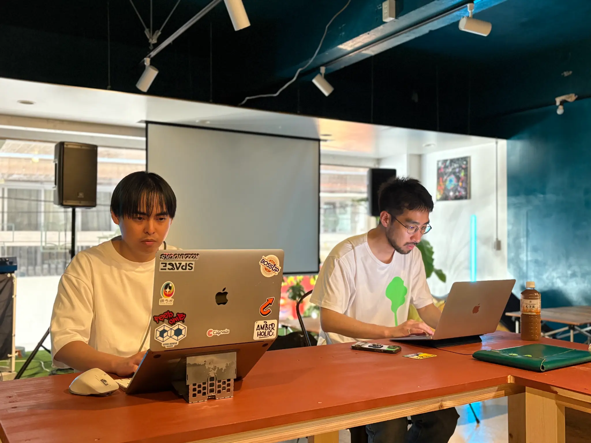
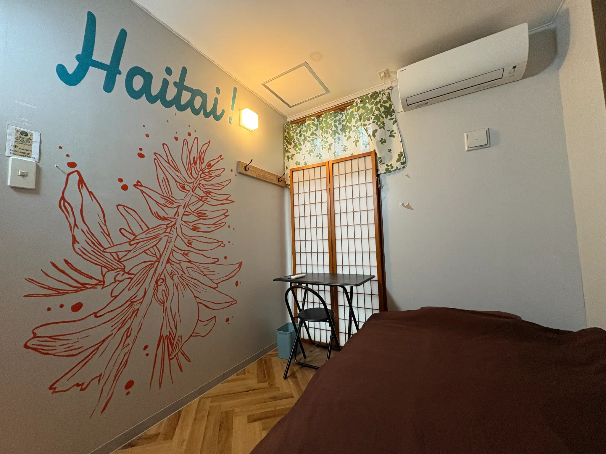

Beyond Delivery
作って終わりにしない
企画の入口から実行まで伴走します。制作物を納品することではなく、プロジェクトが前に進むことをゴールにします。
About Cignals
Vision
創造性は、特別な肩書きを持つ人だけのものではありません。まだ言葉にならない違和感や、誰かに話すには少し照れくさい夢。その始まりが押しつぶされず、ちゃんと仕事や事業として社会へ開かれていく環境をつくります。
What is Cignals
企画から、制作、実行まで。クリエイターとチームを組んで、コザを拠点に新しいプロジェクトを形にする。沖縄県内はもちろん、県外の企業や地域からのご相談もお受けしています。

Why Koza
コザには、音楽も、商いも、いろんな文化も、昔から混ざり合ってきた面白さがあります。
この街で出会う人たちと企画を考え、クリエイターと一緒に形にする。そんな仕事を通して、新しいつながりや挑戦が生まれてきました。
Cignalsにとってコザは、仕事をする場所であり、自分たちも新しいことに挑戦する場所です。
How we work
迷ったときに立ち返る、3つの約束です。
企画の入口から実行まで伴走します。制作物を納品することではなく、プロジェクトが前に進むことをゴールにします。
案件ごとに、最適なクリエイターや地域のパートナーとチームを組みます。デザイン、映像、運営、編集を分けすぎず、目的に必要な形を選びます。
ポスター1枚、サイト1つの制作でも、新しい事業づくりでも。挑戦する人の“やりたい”を形にして、次の一歩につながるところまで考えます。
Team
肩書きで役割を固定せず、企画・編集・制作・現場を横断しながら、プロジェクトごとに外部のクリエイターも交えてチームを組みます。
CEO / Creative Director
地域、事業、カルチャーのあいだにある熱量を見つけ、企画へ変える。Cignalsの思想とプロジェクト全体の編集を担う。
Local Producer
地域の文脈と現場の関係性を読み取り、人・場所・企画が自然につながるプロジェクト設計を担う。
Director / Partner
企画、演出、制作進行を横断し、Cignalsのプロジェクトを現場で動く形へ落とし込む。
Base
自社で運営するKOZA BASECAMPを拠点に、コザ一番街の滞在施設Arcade Resort Okinawaとも連携しながら、仕事をつくっています。

Our Base／自社運営の拠点
2025年春にコザ一番街に開いた、Cignalsが運営する拠点。カフェ＆バー、ギャラリー、ワークスペース、レコーディングブースを備え、企画や制作、研修の場として使われています。
拠点情報を見る
Partner／連携する滞在施設
Cignalsと連携する、コザ一番街のホステル。研修や滞在プログラム、音楽制作の企画などで一緒に取り組み、外から来た人が街に滞在しながらつくれる環境を整えています。公式サイトの制作もCignalsが担当しました。
公式サイトを見るCompany
Contact
企画になる前の相談でも構いません。まだ名前のない「やってみたい」から、一緒に形を考えます。
相談する